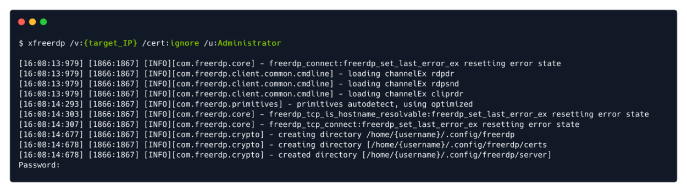

xfreerdp
Remote Desktop Client
apt-get install freerdp2-x11
Default Port: 3389 TCP/UDP
xfreerdp /v:{Target_IP} /cert:ignore /u:{Username} /p:{Password}
Note: For Misconfigured servers we can leave the /p: field and just hit enter when asked for Password

/cert:ignore : Specifies to the scrips that all security certificate usage should be ignored. (We can omit this and accept the certificate when asked)
/u:Administrator : Specifies the login username to be "Administrator".
/v:{target_IP} : Specifies the target IP of the host we would like to connect to.
eg.
xfreerdp -f /v:10.129.162.16 /u:htb-student /cert:ignore /p:Academy_WinFun!
-f: For Full screen
eg.(Best Way)
xfreerdp /dynamic-resolution +clipboard /cert:ignore /v:10.10.212.167 /u:Administrator /p:'TryH4ckM3!'